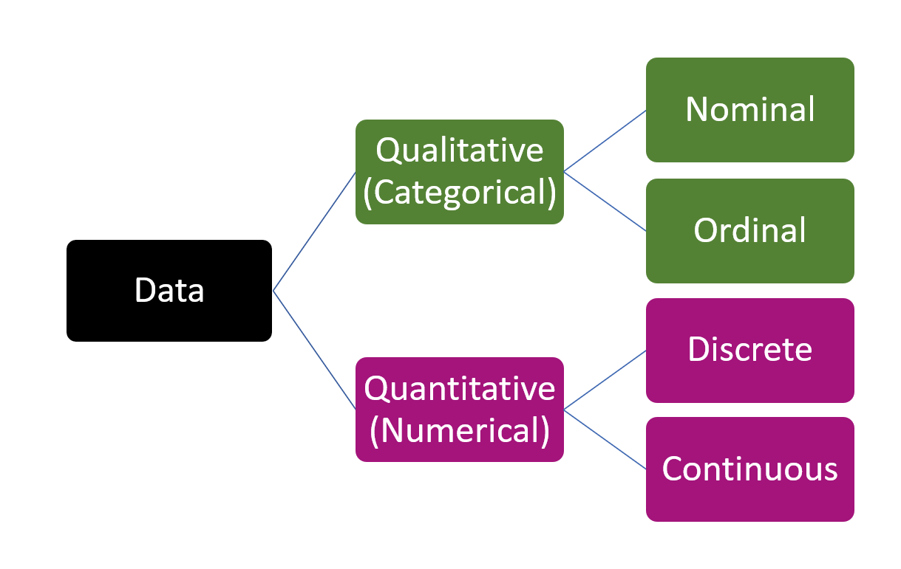
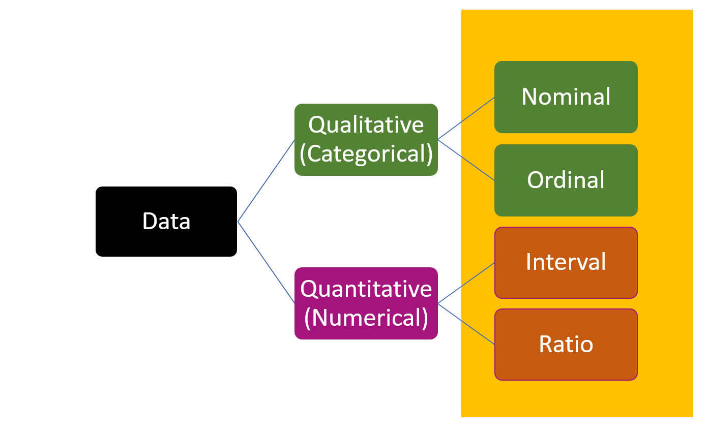

| Variable name | Variable description |
|---|---|
| species | penguin species (Adélie, Chinstrap and Gentoo) |
| island | island in Palmer Archipelago, Antarctica (Biscoe, Dream or Torgersen) |
| bill_len | bill length (millimeters) |
| bill_dep | bill depth (millimeters) |
| flipper_len | flipper length (millimeters) |
| body_mass | body mass (grams) |
| sex | penguin gender (female, male) |
| year | the study year (2007, 2008, or 2009) |
4 Types of Variables
4.1 Components of a datset
Each variable must have its own column.
Each observation must have its own row.
Each value must have its own cell.
4.2 penguins dataset
How many variables and observations are there in the data set?
What are the variable names?
Variable description
Preview of the dataset
# A tibble: 344 × 8
species island bill_length_mm bill_depth_mm flipper_length_mm body_mass_g
<fct> <fct> <dbl> <dbl> <int> <int>
1 Adelie Torgersen 39.1 18.7 181 3750
2 Adelie Torgersen 39.5 17.4 186 3800
3 Adelie Torgersen 40.3 18 195 3250
4 Adelie Torgersen NA NA NA NA
5 Adelie Torgersen 36.7 19.3 193 3450
6 Adelie Torgersen 39.3 20.6 190 3650
7 Adelie Torgersen 38.9 17.8 181 3625
8 Adelie Torgersen 39.2 19.6 195 4675
9 Adelie Torgersen 34.1 18.1 193 3475
10 Adelie Torgersen 42 20.2 190 4250
# ℹ 334 more rows
# ℹ 2 more variables: sex <fct>, year <int>4.3 Types of Variables

4.4 Qualitative/ Categorical Variables
Describes categories or groups
Non-numeric (no numerical meaning)
-
Examples:
- colors: red, blue, green
- gender: male, female
- types of animals: non-mammal mammal
- colors: red, blue, green
Your turn: Identify qualitative variables in the penguins dataset.
4.5 Quantitative Variables/ Numerical Variables
Represents measurable quantities
Numeric
-
Examples:
- Height in cm
- Weight in kg
Your turn: Identify quantitative variables in the penguins dataset.
4.6 Discrete vs Continuous
Discrete
Represent countable quantities
Can take on only specific, distinct values (whole numbers)
No intermediate values between consecutive values
Examples:
Number of students in a classroom
Number of cars in a parking lot
Number of books on a shelf
Continuous
Represent measurable quantities
Can take on any value within a given range, including fractions and decimals.
Infinite number of possible values within a range.
Examples:
Height of individuals
Temperature
Time taken to complete a task
Your turn: Identify discrete and continuous variables
| Variable name | Variable description |
|---|---|
| species | penguin species (Adélie, Chinstrap and Gentoo) |
| island | island in Palmer Archipelago, Antarctica (Biscoe, Dream or Torgersen) |
| bill_len | bill length (millimeters) |
| bill_dep | bill depth (millimeters) |
| flipper_len | flipper length (millimeters) |
| body_mass | body mass (grams) |
| sex | penguin gender (female, male) |
| year | the study year (2007, 2008, or 2009) |
4.7 Scales of measurement

4.8 Nominal Scale
The simplest measurement scale
Named variable levels
No numerical meaning
They have no natural order.
Categories are mutually exclusive.
The difference between values can’t be evaluated.
Examples
Blood type: O-, O+, A-, A+, B-, B+, AB-, AB+
Hair color: Blonde, black, brown, grey
District you live
4.9 Ordinal Scale
The simplest measurement scale
Named variable levels
No numerical meaning
They have a natural order.
Categories are mutually exclusive.
The difference between values can’t be evaluated.
Examples
Income: Low income, medium income, high income
Customer Satisfaction: Very Dissatisfied, Dissatisfied, Neutral, Satisfied, Very Satisfied
Grade: A+, A, A-, B+, B, B-
4.10 Interval Scale
These variables have
a natural order
a numerical meaning
a quantifiable difference between values
no true zero value
Examples
Temperature: Measured in Fahrenheit or Celsius
Marks: Measured from 0 to 100
4.11 Ratio Scale
These variables have
a natural order
a numerical meaning
a quantifiable difference between values
a true zero value
Examples
Height: measured in centimeters.
Weight: measured in kilograms.
4.12 Summary: scales of measurements

4.13 Exercise
Identify scales of measurement for each variable.
| Variable name | Variable description |
|---|---|
| species | penguin species (Adélie, Chinstrap and Gentoo) |
| island | island in Palmer Archipelago, Antarctica (Biscoe, Dream or Torgersen) |
| bill_len | bill length (millimeters) |
| bill_dep | bill depth (millimeters) |
| flipper_len | flipper length (millimeters) |
| body_mass | body mass (grams) |
| sex | penguin gender (female, male) |
| year | the study year (2007, 2008, or 2009) |